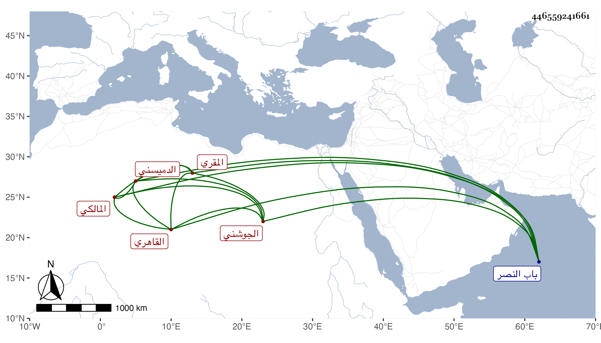

0902Sakhawi.DawLamic.ITO20230111-ara1.EIS1600.446559241661
Biography ID: 446559241661
1115
يعقوب بن عبد الرحيم بن عبد الكريم الشرف أبو يوسف الدميسني ثم القاهري المالكي المقري نزيل تربة جوشن ظاهر باب النصر وربما قيل له الجوشني . أخذ القراآت عن أبي بكر بن الجندي وإسمعيل الكفتي والتقي البغدادي وبرع فيها بحيث أخذها عنه جماعة وممن أخذ عنه الزين رضوان وقال أنه عارفا بالفن مع الزهد والصلاح والتقشف ، واستقر بأخرة في مشيخة القراآت بالشيخونية عقب الغماري وكان يقول متى يستفتح من فتح بعد العصر ولم يلبث أن مات .
